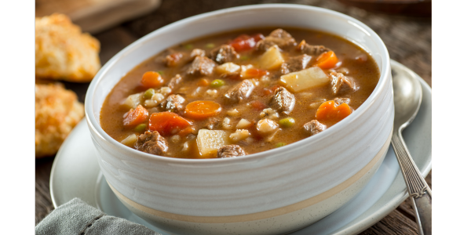

RECEITA - SOPA DE CARNE, MACARRÃO E LEGUMES
INGREDIENTES
- 1 colher (sopa) de óleo
- 500g de músculo limpo em cubos de 2cm
- 1 cebola picadinha
- 2,5 litros de água quente
- 2 cubinhos de caldo de carne
- 1 xícara (chá) de cenoura em rodelas
- 1 xícara (chá) de batata em cubos
- 1 xícara (chá) de mandioquinha em cubos
- 1 xícara (chá) de abobrinha sem sementes em cubos
- 1 xícara (chá) de macarrão
- Sal e pimenta-do-reino a gosto
- Folhas de espinafre lavadas e escorridas
MODO DE PREPARO
- Aqueça bem o óleo na panela de pressão e refogue a carne até dourar.
- Acrescente a cebola e refogue por uns 2 minutos.
- Adicione 1 litro de água e os cubos de caldo e tampe a panela.
- Cozinhe em fogo médio por 20 minutos após começar a apitar.
- Libere a pressão para abrir a panela, adicione o restante da água, a cenoura e a batata e cozinhe por 5 minutos sem tampa.
- Junte os demais ingredientes, tampe e cozinhe por 3 minutos após pegar pressão novamente.
- Sirva assim que abrir a panela.
Voltar